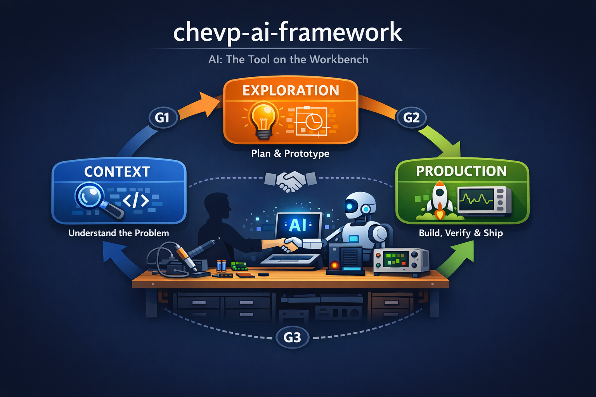
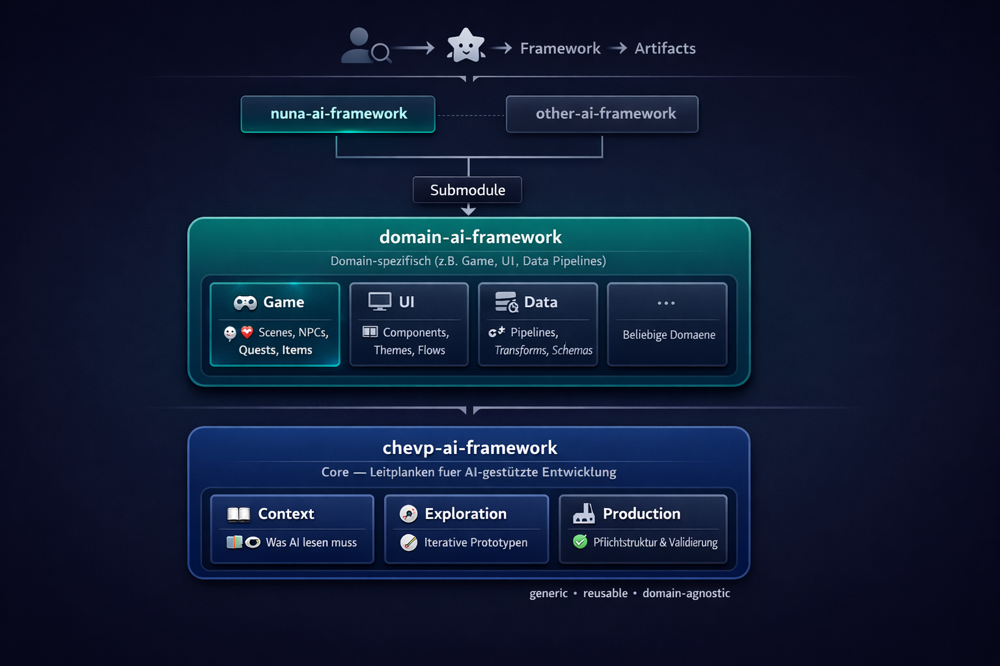

Vibe Coding is not progress — it's technical recklessness.
AI writes code, but it doesn't take responsibility. This framework does.
MIT License · Generic · Reusable · Domain-agnostic
3 steps, 3 quality gates, human approval at every transition

Understand the problem, gather context, confirm scope
Output: Problem description, affected modules, confirmed scope
Plan the solution, prototype, validate the approach
Output: Approved plan/spec, prototype, ADR
Build, verify, ship
Output: Production code, passing tests, commit on main
Context → Exploration
Problem understood, modules identified, scope confirmed
Exploration → Production
Plan/spec approved, prototype visually confirmed
Production → Done
Acceptance criteria fulfilled, no regressions, human approved
Six cross-cutting roles operate within each step
Process governance, quality gates, step transitions
Plan/spec artifacts, acceptance criteria, scope management
Prototypes, preview feedback loops, visual/physical validation
Build verification, commit workflow, CI/CD
ADRs, pattern enforcement, design decisions
CLAUDE.md, context hierarchy, what AI must read
Generic core, domain-specific layers, project-level frameworks

The core lifecycle with Context, Exploration, and Production. Generic and reusable across all domains.
Domain-specific extension adding specialized rules, templates, and conventions (e.g. Game, UI, Data Pipelines).
Concrete project frameworks (e.g. nuna-ai-framework) that inherit from the domain layer and produce final artifacts.
The rules that make AI-assisted development responsible
Quickly generated code must be reviewed and understood
AI without context invents things
Small steps with validation after each step
AI suggests, the developer bears responsibility
Add this to your project's CLAUDE.md — that's it
## Before Writing Code
Reads, greps and explanations are always free.
Before you **create, edit or delete** any file:
1. Load the framework:
@url https://chevp.github.io/chevp-ai-framework/chevp-ai-framework.md
2. Announce the inferred lifecycle step
(Context / Exploration / Production)mkdir -p context/{architecture,adr,guidelines,plans/finished,specs}Claude loads the framework automatically via @url and enforces the lifecycle. No submodule, no fork, no local copy needed.
Clear separation of lifecycle steps, templates, and guidelines
01-context/ # Step 1 — Understand the problem
02-exploration/ # Step 2 — Plan and prototype
03-production/ # Step 3 — Build, verify, ship
templates/ # Plan, spec, ADR, CLAUDE.md, prototype templates
guidelines/ # Cross-cutting quality rules
integration/ # Integration into existing projects